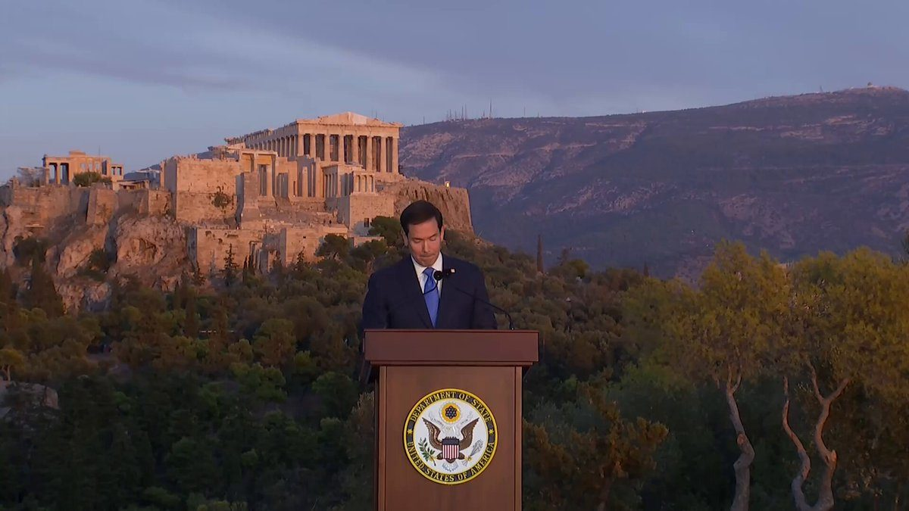
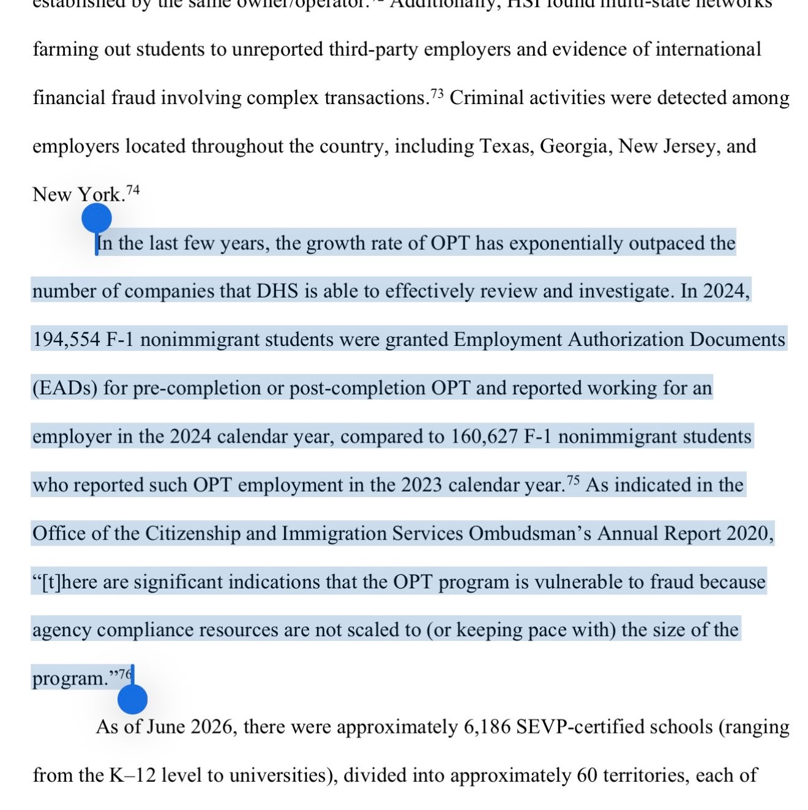

#BREAKING: Minnesota man Sheikhdoon Mohamud charged in a terror plot against the Mall of America.
SECRETARY RUBIO: Today, we find ourselves at a crossroads because the next decade and the decisions we make will write the story of the next century. The course we take will determine whether the West maintains its place at the head of the world, or resigns itself to a future of atrophy, servitude, and decline. We will either choose to act now, or lose the choice to act at all.
Under President Trump, the United States has made its choice.

▶ Watch on XSECRETARY RUBIO: “Nationalism” became a dirty word. So we tore down our monuments, we condemned our own history, and in too many places we taught our children to be ashamed of the countries they would inherit. In the process we opened our borders, and outsourced our industry, and allowed our militaries to wither and to decay.
▶ Watch on X.@SecRubio: "Too often, these days, we build downwards. We design our standards to ensure that no one will lose. We preoccupy ourselves more with the comfort of the worst than the potential of the best. We hold the most exceptional things among us hostage to the average."
▶ Watch on XTrump shouts out OMB Director Russ Vought: “We have some big surprises coming up in a few weeks, right Russ? He's gonna be one of the very important people in the history of our country.” 👀
▶ Watch on XWATCH IN FULL: @SecRubio delivers a major foreign policy address from beneath the Acropolis in Athens
▶ Watch on XFOSTERING THE FUTURE ACCOUNTS // Automatic Enrollment activates 26 States
Today, every eligible foster child in America will be automatically enrolled in a Fostering the Future Account.
But only foster children living in states that have committed to the program can immediately benefit from these savings and investment accounts.
To the remaining 24 governors, please prioritize America’s foster children and pledge your states’ participation today.
JUST IN: FCC moves to ban all Chinese labs from testing electronics for U.S. use, after 82% of American electronics were tested in China last year.
Today, President Donald J. Trump hereby proclaimed Monday, October 12, 2026, as Columbus Day.
🚨 1 can of Spam for $120. Food stamps have become the new ATM for fraudsters as they partner with local businesses to commit the fraud as they trade SNAP cards like Pokémon cards on the streets.
Across America food stamp fraud is happening everywhere. It has become a billion dollar fraudulent industry as taxpayers fund the $100 billion program.
We caught a fraudster on the streets of Seattle as she attempted to buy a can of spam and sushi for $120 in a food stamp for cash exchange, it’s a billion dollar fraudulent scheme stealing from the poor and hungry. This is a must watch and is happening everywhere.
EXPOSE AND SHUT IT ALL DOWN.
Between 2020 and 2024, filings of suspicious activity reports related to check fraud increased nearly 300% in Minnesota. In support of the Trump Administration’s priority to eliminate fraud and protect Americans from illicit activity, Comptroller Jonathan V. Gould convened a panel of local community bankers in Minneapolis to discuss recent financial fraud in Minnesota, the role of banks to identify and combat fraud, and the OCC’s commitment to support banks in their efforts to protect their customers.
These headlines are a disgrace and another example of why nobody trusts the media. If you watch the full clip, it's clear what he is saying is that high oil prices are a small price to pay for stopping Iran from getting a nuke that would allow them to take out US cities.
.@POTUS: "CNN's poll numbers are fake and your whole outfit is fake — and so are you." 🎯
▶ Watch on XDems’ latest Trump attack backfires as frequent critics refuse to play along
BREAKING: SpaceX wins FCC approval for its 15,000-satellite Direct-to-Cell constellation.
The order also includes a conditional U.S. waiver of satellite power limits, advancing SpaceX’s push to expand mobile coverage beyond the reach of cell towers.
We’re releasing a broad range of new mathematical results produced by an internal frontier model.
We’ve been consulting with the independent Advisory Group on Mathematics and Artificial Intelligence at the Institute for Advanced Study, and we have drawn on their advice and public recommendations to inform how we release these results.
Building on the productive discussions at the G20 Trade Ministerial in Milwaukee, fourteen economies joined the U.S. in signing a Joint Ministerial Statement that expresses our collective resolve to work together in new, dedicated sectoral platforms to address structural excess capacity and production in certain manufacturing sectors.
Today, the @StateDept is publicly naming and banning from U.S. entry Zhao Fugang, the Director of the Overseas Chinese Service Center in Fiji, for bribing Fijian citizens to advance China-based government, business, and criminal interests. The Trump Administration will continue to hold those who threaten U.S. interests accountable.
“We, the Jews of Israel, have a great problem with progressive Jews abroad promoting immigration.
And we should start calling them out before the anti-Semites do, because we have lost the left... but we are also losing the right.”
— @GadiTaub1 at NatCon Jerusalem.
ICE OPT Fee Rule includes admission that OPT is too big to regulate. Fraud rampant

#BREAKING: DHS proposes $70,000 fee for foreign graduates to work in the U.S. under OPT.
ICE is proposing new fee for OPT. $70K for initial OPT and $30K for additional OPT.
Today, HUD launched an investigation into Wells Fargo's apparent race-based lending programs.
The American Dream is rooted in equality, not racial sorting.
DEI is division dressed up as progress — and we are ending it under @POTUS.
Ripple has expanded into nearly every corner of the crypto industry, from stablecoins to asset custody. Now it is edging into Wall Street’s terrain.
📰 "Trump Makes $100 Million Push to Train American Scientists" @Bloomberg
Before launching Trump Accounts, 38% of Americans did not own a stock.
Now, every member of the next generation will have an investment account, and will benefit from our booming economy.
JUST IN: U.S. seizes more than 600,000 gallons of biodiesel bound for Cuba.